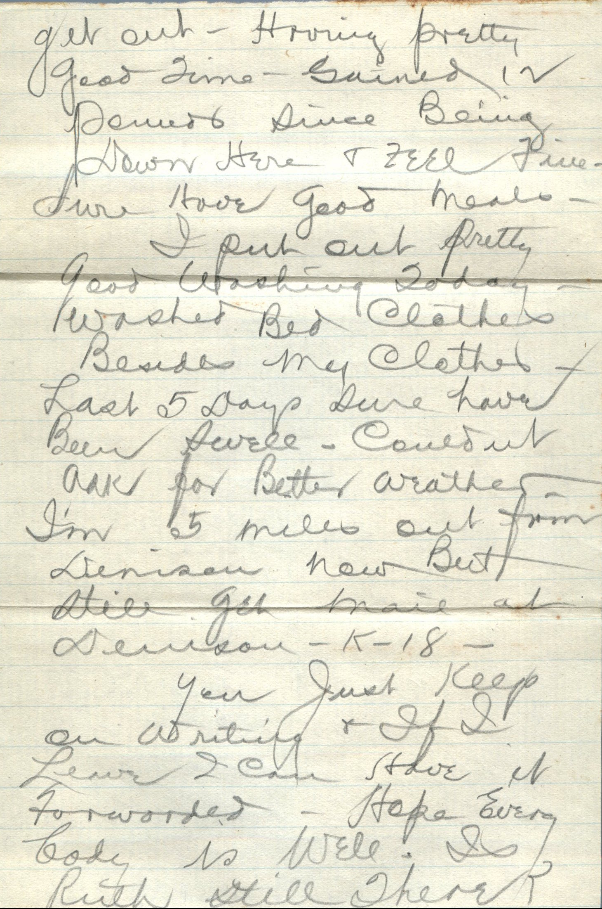
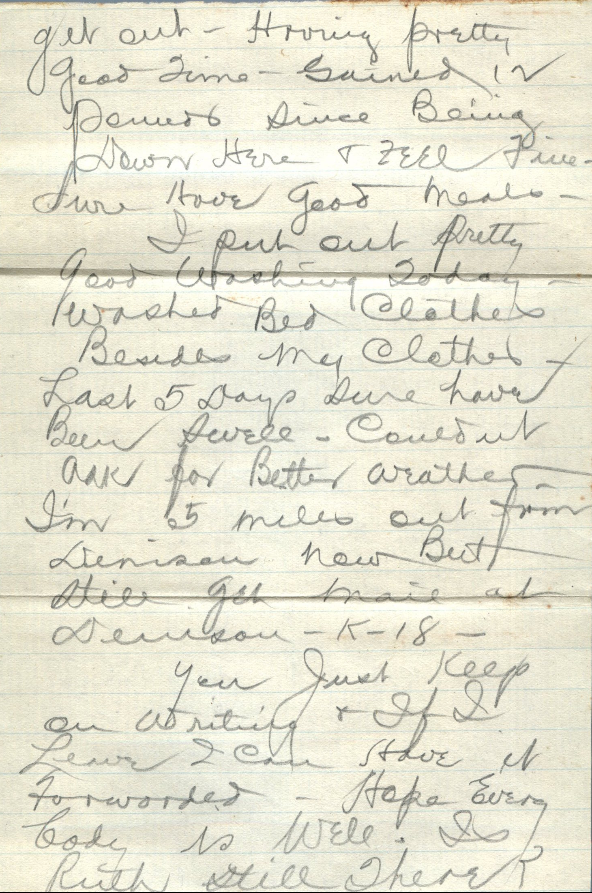

From: Martin Chandler, To: Elijah H. Chandler and Family
 


From: Martin Chandler, To: Elijah H. Chandler and Family Mailed From: Denison, Texas on February 7, 1916
Mr. E. H. Chandler Pearl, Ill Pike Co
M. Chandler K18 Denison, Tex
Denison, Feb 5 Dearest Folks, Gee wish I hadn't told you not to write sure miss the mail. Expected to get out by first of month but account of work closing down on Union Pacific all the men came down here so I may be here a week yet. want you all to write me right away. Am enclosing letter from Ft. Worth so you see I can't tell exactly when I will get out. Having pretty good time. Gained 12 pounds since being down here and feel fine. Sure have good meals. I put out pretty good washing today. Washed bed clothes beside my clothes. Last 5 days sure have been swell. Couldn't ask for better weather. I'm 5 miles out from Denison now but still get mail at Denison-K-18- You just keep on writing and if I leave I can have it forwarded. Hope everybody is well. Is Ruth still there? Well I don't know hardly anything to write so will close. Hope to hear from all of you soon. Lovingly, Martin
Enclosed in Letter:
Ft. Worth Texas, Feb. 4, 1916 Mr. V. V. Bryant, K-18 Denison, Texas. Dear Sir: Your letter of Jany 26th advising Mr. W. C. Chandler was ready to take a camp. There has not been a vacancy in which we could place Mr. Chandler. Please advise him we have not forgotten him and will place him just as soon as an opening develops. We are expecting some new camps to open in the near future and will no doubt be able to use him soon. but just at this time cannot say when. Yours truly, The J.E. Hutt Contrg. Co. By A.E.F